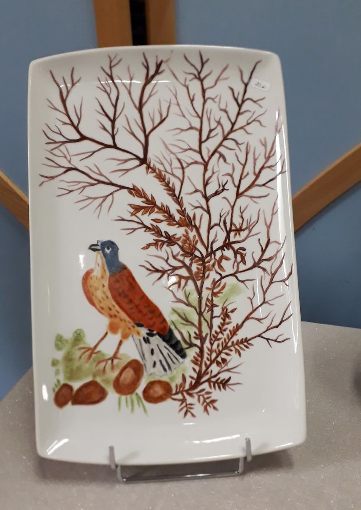
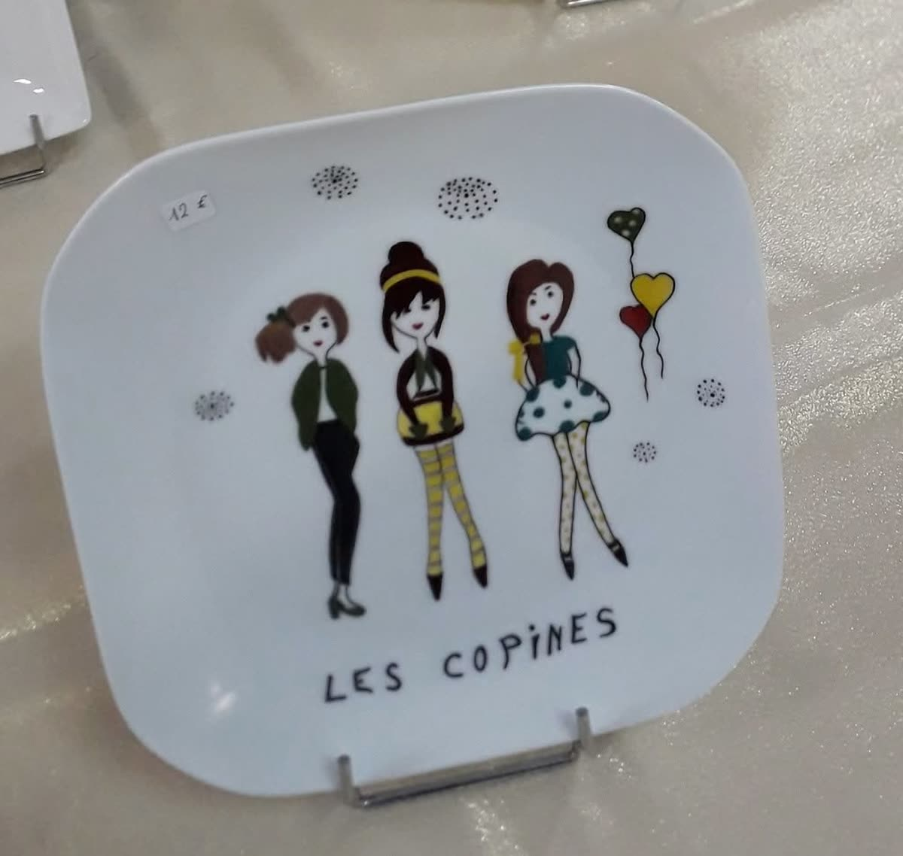
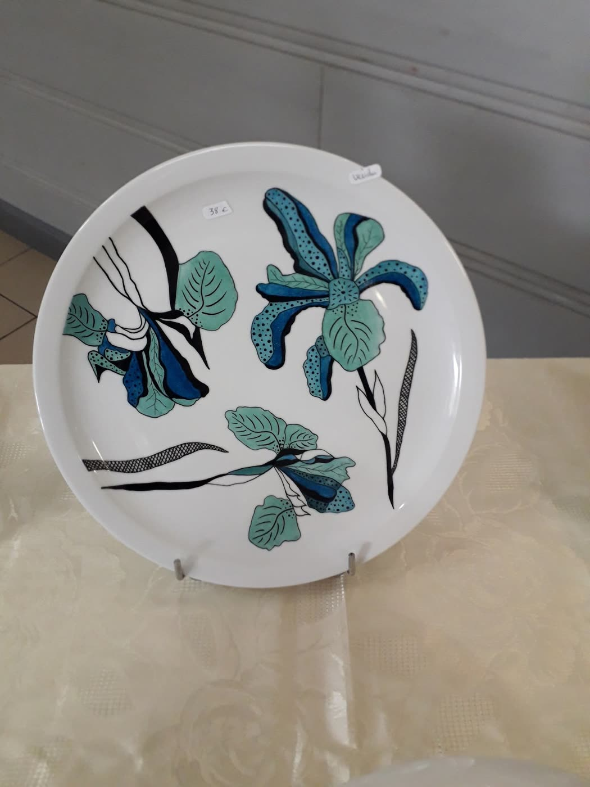
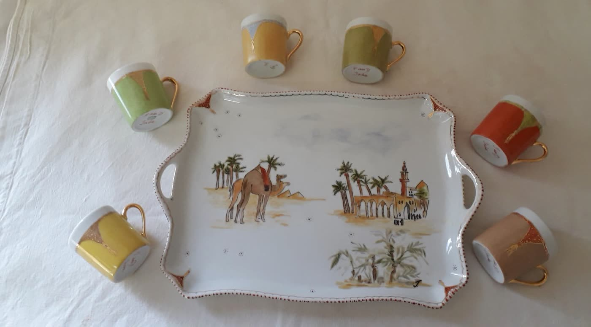
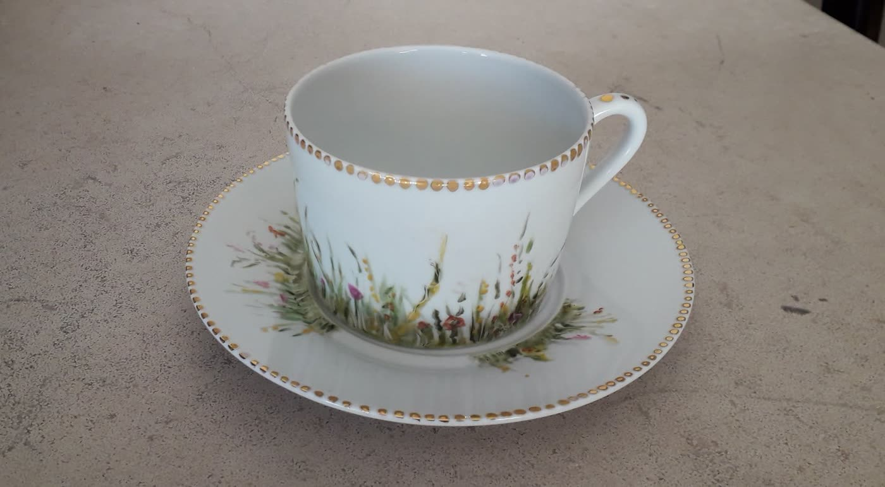
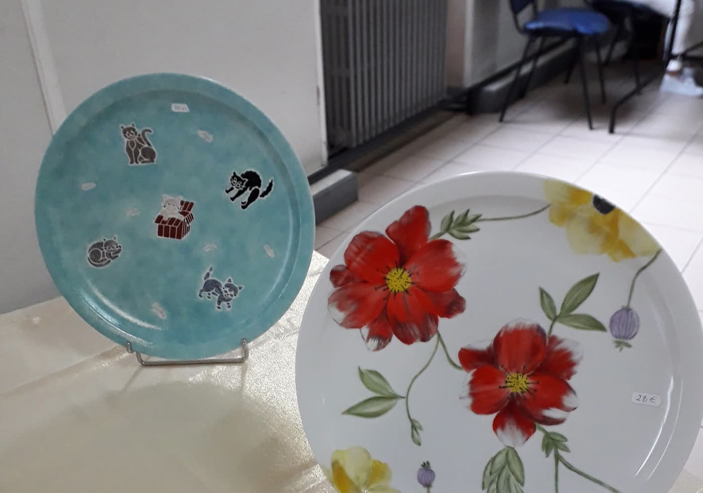
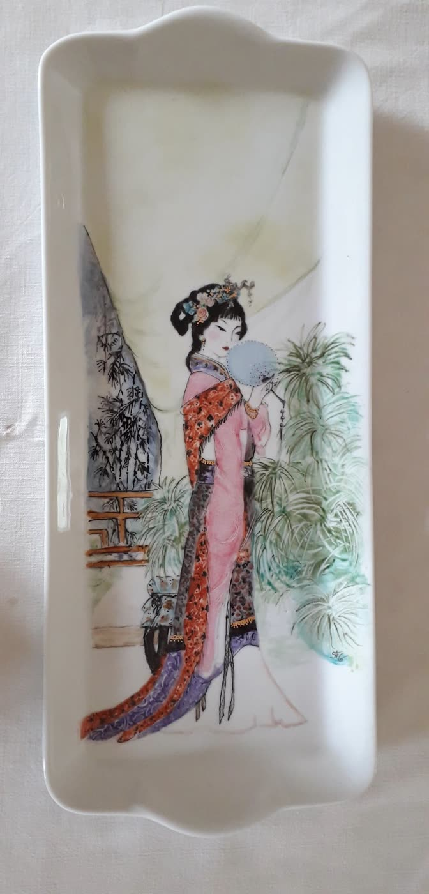

Porcelaine des Demoiselles
Atelier de peinture sur porcelaine à Port-des-Barques
Une dizaine de copines se retrouvent pour peindre assiettes, plateaux et tasses, et apprennent ensemble.
Débutantes bienvenues : la peinture sur porcelaine est à la portée de toutes.

Un atelier entre copines
La Porcelaine des Demoiselles est l’une des associations de Port-des-Barques, notre petite cité balnéaire de Charente-Maritime. Le groupe réunit une dizaine de « créatrices en herbe ».
On y découvre la peinture sur porcelaine blanche : fleurs, oiseaux, personnages, paysages… Chacune choisit ses motifs et avance à son rythme. On apprend les unes des autres, en partageant astuces et conseils.
Tout au long de l’année, nous montrons nos pièces lors d’expositions-ventes. Ce sont aussi de beaux moments de partage, entre nous et avec les visiteurs.
Ce que nous peignons
- Assiettes et plats
- Plateaux
- Tasses et soucoupes
- Coupelles et petites boîtes
- Abat-jour

Nous accueillons de nouvelles adhérentes
Vous aimez les couleurs, les jolies choses et les moments entre amies ? Pas besoin de savoir dessiner : on apprend ensemble, pas à pas, dans la bonne humeur.
-
Prenez contact
Écrivez-nous, appelez-nous ou laissez un message sur notre groupe Facebook.
-
Venez nous rencontrer
Passez voir l’atelier ou retrouvez-nous lors d’une exposition-vente pour découvrir nos pièces et poser vos questions.
-
Lancez-vous
Choisissez votre premier motif : nous vous montrons les premiers gestes et partageons nos astuces.
Nos pièces
Quelques réalisations des membres, photographiées lors de nos expositions. Touchez ou cliquez sur une photo pour l’agrandir.















Nos rendez-vous
Au printemps et à l’automne, nous exposons et vendons nos pièces à la salle des fêtes de Port-des-Barques. C’est le meilleur moment pour venir nous rencontrer.
Prochain rendez-vous Date à venir : elle sera annoncée sur notre groupe Facebook.
Nos dernières expositions
| Date | Événement | Lieu |
|---|---|---|
| 21 et 22 nov. 2026 | Exposition-vente | Salle des fêtes, Port-des-Barques |
| 1er et 2 nov. 2025 | Exposition-vente | Salle des fêtes, Port-des-Barques |
| 3 et 4 mai 2025 | Exposition-vente | Salle des fêtes, Port-des-Barques |
| 29 nov. 2020 | Marché de Noël | Salle polyvalente, Port-des-Barques |
Horaires habituels des expositions : le samedi de 10 h à 17 h, le dimanche de 10 h à 15 h.
Infos pratiques et contact
Nous contacter
- Par e-mail
- Adresse à compléter
- Par téléphone
- Numéro à compléter
- Sur Facebook
- Groupe « Porcelaine des Demoiselles »
L’atelier en pratique
- Lieu des séances
- À compléter
- Jours et horaires
- À compléter
- Cotisation
- À compléter
- Expositions
- Salle des fêtes de Port-des-Barques (Charente-Maritime)